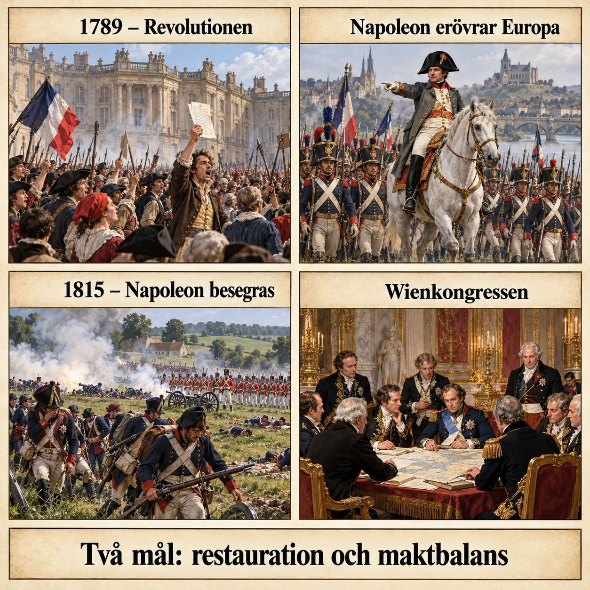
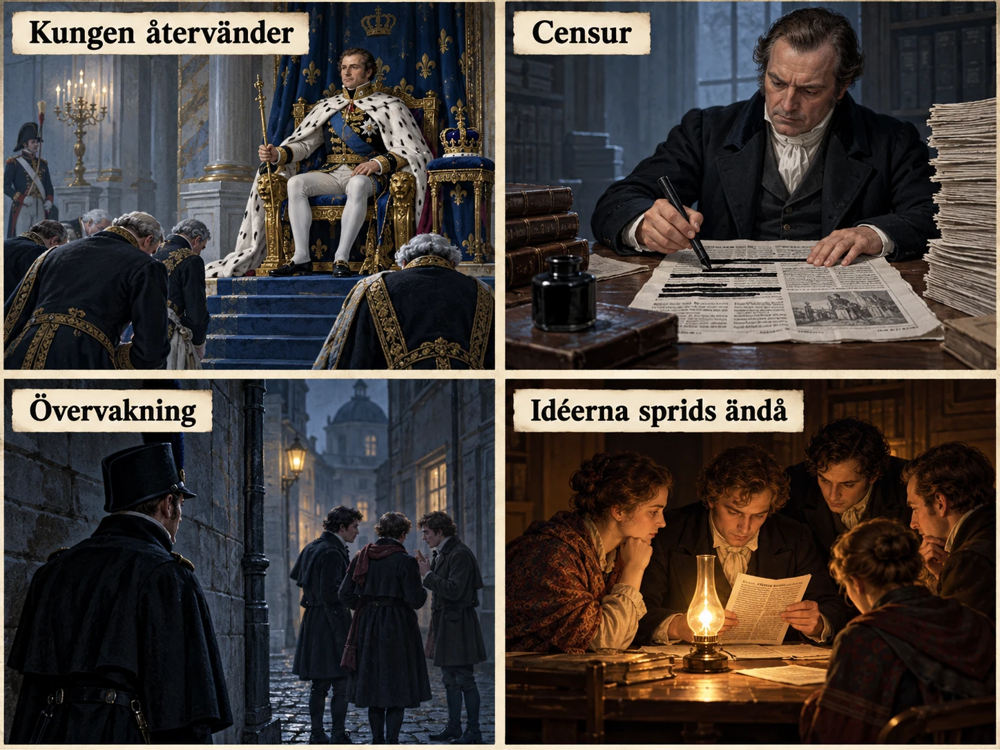
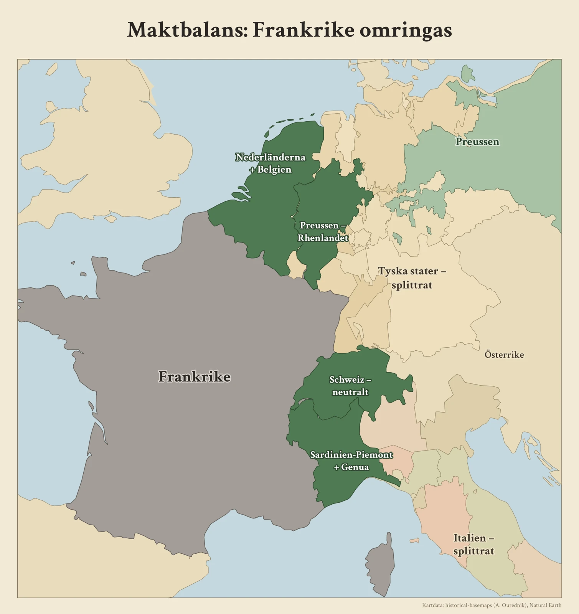
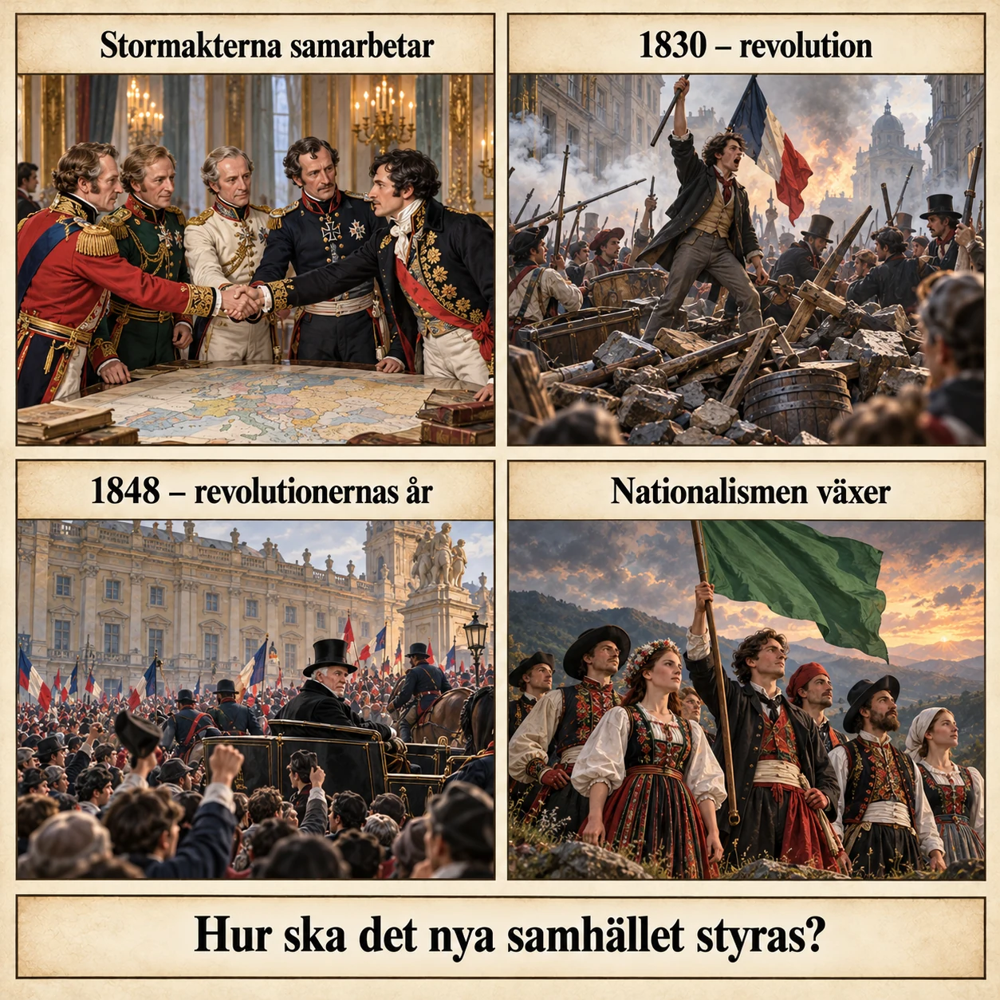

— freden som skulle bevara det gamla Europa —
Hösten 1814 möttes Europas ledare i staden Wien. De hade en svår uppgift framför sig. I mer än 20 år hade Europa präglats av revolution och krig. Gamla kungariken hade försvunnit eller blivit svagare, och nya idéer hade spridits. Nu måste stormakterna bestämma hur Europa skulle styras, så att det inte blev nya revolutioner och krig.
Allt började med franska revolutionen 1789. Revolutionärerna ifrågasatte kungens makt och adelns särskilda rättigheter, som kallades privilegier. De ville att människor skulle vara friare och att alla skulle vara jämlika inför lagen. Det betyder att samma lagar ska gälla för alla, oavsett om man är adlig eller bonde.
Efter revolutionen blev det krig mellan Frankrike och andra länder i Europa. År 1799 tog Napoleon Bonaparte makten i Frankrike, och 1804 gjorde han sig till kejsare. Napoleon var en skicklig fältherre. Han erövrade stora delar av Europa eller tvingade länder att lyda Frankrike. Många gamla kungahus förlorade sin makt. Gränser flyttades och nya stater skapades. Napoleon satte till och med sina släktingar och anhängare som kungar i flera länder.
Krigen spred också revolutionens idéer. I många områden fick man nya lagar om jämlikhet, och adeln förlorade gamla rättigheter. Samtidigt växte nationalismen. Det är tanken att människor som känner att de är ett folk ska få bilda en egen nation och styra sig själva. Alla tyckte inte likadant om förändringarna. Vissa var glada över dem, medan andra ville ha tillbaka det gamla. Många gillade revolutionens idéer men ville ändå inte styras av Frankrike.
Till slut började Napoleon förlora. År 1812 anföll han Ryssland, men fälttåget slutade i en katastrof. Efter det gick flera länder ihop mot Frankrike. Våren 1814 besegrades Napoleon och tvingades abdikera, alltså lämna ifrån sig makten. Året därpå, 1815, tog han makten igen under en kort tid, men han besegrades för sista gången i slaget vid Waterloo i juni.
Under tiden pågick förhandlingarna i Wien. De kallas Wienkongressen och pågick från hösten 1814 till juni 1815. Ledarna ville se till att ingen ny Napoleon kunde erövra Europa. De var också rädda för att nya revolutioner skulle hota kungarnas makt. Frågan var alltså inte bara hur kriget skulle avslutas. Frågan var hur Europa skulle ordnas så att freden kunde hålla länge.
Många länder skickade representanter till Wien. Men fem länder bestämde mest: Österrike, Ryssland, Preussen, Storbritannien och Frankrike. De kallades stormakter. En stormakt är ett land som är så starkt militärt, ekonomiskt och politiskt att det kan påverka hela Europa.
En av de viktigaste personerna i Wien var Klemens von Metternich, Österrikes utrikesminister. Metternich förespråkade konservatism. Det är en politisk idé som går ut på att bevara traditioner, kungamakten och den gamla samhällsordningen. Metternich tyckte att revolutioner skapade oro och hotade freden.
Stormakterna kom överens om två stora mål. Det första var restauration, som betyder återställande. Kungar och furstar som hade förlorat sin makt skulle få tillbaka sina troner. Det andra målet var maktbalans. Stormakterna skulle vara ungefär lika starka, så att ingen av dem kunde ta över de andra. Då skulle det bli svårare för någon att starta ett nytt stort krig.

Men kunde man verkligen gå tillbaka till det gamla, när idéerna om frihet, jämlikhet och nationalism redan hade spridits? Det undersöker vi i de kommande delarna, där vi tittar närmare på de två målen.
När Europas ledare samlades i Wien hösten 1814 stod de inför en svår uppgift. Efter mer än 20 år av revolution och krig hade Europas politiska karta förändrats. Gamla kungariken hade försvunnit eller försvagats, och nya idéer hade spridits över kontinenten. Nu behövde stormakterna komma överens om hur Europa skulle styras för att förhindra nya revolutioner och krig.
Den franska revolutionen började 1789 och förändrade samhället i Frankrike. Revolutionärerna ifrågasatte kungens makt och adelns privilegier. De ville skapa ett samhälle där människor hade större frihet och var jämlika inför lagen, alltså att samma lagar skulle gälla för alla, oavsett vilken samhällsgrupp de tillhörde.
Efter revolutionen följde flera krig mellan Frankrike och andra europeiska länder. År 1799 tog Napoleon Bonaparte makten i Frankrike, och 1804 utropade han sig till kejsare. Under hans ledning erövrade eller kontrollerade Frankrike omfattande områden utanför de egna gränserna.
Napoleons erövringar förändrade Europas politiska karta. Flera gamla kungahus förlorade sin makt, medan nya stater bildades och andra fick förändrade gränser. Napoleon placerade även släktingar och anhängare på troner i länder som Frankrike kontrollerade.
Men krigen förändrade inte bara Europas gränser. De bidrog också till att sprida idéer från den franska revolutionen. I flera områden infördes nya lagar som betonade jämlikhet inför lagen och minskade adelns gamla privilegier. Samtidigt växte nationalismen, tanken att människor som uppfattade sig tillhöra samma folk borde kunna bilda en egen nation och styra sig själva.
Detta skapade motsättningar. Många välkomnade förändringarna, medan andra ville försvara den gamla samhällsordningen. Människor kunde också uppskatta revolutionens idéer men samtidigt motsätta sig att deras land styrdes av Frankrike.
Efter flera år av krig började Napoleons makt försvagas. Ett misslyckat fälttåg mot Ryssland 1812 blev en viktig vändpunkt. Flera europeiska stater förenade sina styrkor mot Frankrike, och våren 1814 besegrades Napoleon och tvingades abdikera, alltså lämna ifrån sig makten. Han återvände visserligen till makten under en kort period 1815, men besegrades slutgiltigt i slaget vid Waterloo i juni samma år.
Förhandlingarna i Wien, som kallas Wienkongressen, hade då pågått sedan hösten 1814 och avslutades i juni 1815. De europeiska ledarna ville undvika att en ny Napoleon skulle kunna erövra stora delar av Europa. De fruktade också att revolutioner skulle spridas och hota kungarnas makt. Frågan var därför inte bara hur krigen skulle avslutas, utan hur Europa skulle organiseras för att skapa en varaktig fred.
Representanter från många europeiska stater deltog i Wienkongressen, men fem länder hade särskilt stort inflytande: Österrike, Ryssland, Preussen, Storbritannien och Frankrike. Dessa länder räknades som stormakter, eftersom deras militära, ekonomiska och politiska styrka gav dem möjlighet att påverka utvecklingen långt utanför de egna gränserna.
En av kongressens viktigaste ledare var Österrikes utrikesminister Klemens von Metternich. Han förespråkade konservatism, en politisk idé som betonade vikten av att bevara traditioner, kungamakt och den etablerade samhällsordningen. Metternich ansåg att revolutioner skapade oro och hotade freden i Europa.
Stormakterna enades om två övergripande mål för den nya ordningen. Det första var restauration, vilket innebar att försöka återställa den gamla politiska ordningen. Kungar och furstar som hade förlorat sin makt under revolutionerna och Napoleonkrigen skulle i många fall återfå sina troner. Det andra var maktbalans, vilket betydde att Europas stormakter skulle vara så jämnstarka att ingen av dem kunde dominera de andra. Genom att förhindra att ett land blev alltför mäktigt hoppades ledarna kunna undvika nya stora krig.
Restauration och maktbalans blev därmed grunden för den ordning som stormakterna försökte skapa efter Napoleon. Men kunde Europas ledare återställa det gamla samhället när idéerna om frihet, jämlikhet och nationalism redan hade spridits? För att förstå varför den nya ordningen snart utmanades behöver vi först undersöka de två målen närmare.
Napoleon besegrades 1814, men det han hade förändrat gick inte att besegra. Det var den paradox som diplomaterna i Wien måste hantera. De kunde skicka kejsaren i exil och sätta tillbaka kungar på deras troner, men de kunde inte återställa det Europa som hade funnits före 1789. Mycket av det Napoleon hade byggt fick i stället stå kvar, även i den ordning som skulle ersätta honom.
För många européer var Napoleon inte bara en erövrare utan också en modernisering som kom med armén. År 1804 infördes Code civil, Napoleons stora lagbok. Den slog fast jämlikhet inför lagen, skyddade den enskildes äganderätt och avskaffade de gamla feodala privilegierna. Lagboken infördes i Nederländerna, Rhenlandet och delar av Italien och Polen. I Rhenlandet var den kvar ända till år 1900, långt efter att de franska soldaterna hade lämnat området.
Napoleon förändrade också Tysklands karta i grunden. Det Tysk-romerska riket hade bestått av omkring 300 större och mindre stater, kyrkliga furstendömen och fria städer. Under åren 1803–1806 slogs de flesta samman, och 1806 upplöstes riket helt. Kvar fanns ett fyrtiotal stater. När Tyska förbundet bildades i Wien 1815 med 39 stater var det alltså Napoleons förenklade karta som låg till grund. Restaurationen återställde kungar och furstar, men den återställde inte hundratals småstater.
Napoleon spred revolutionens idéer, men han spred också något han inte hade räknat med: motstånd i nationens namn. När Napoleon 1808 satte sin bror på Spaniens tron gjorde spanjorerna uppror. Kriget i Spanien fördes av små beväpnade grupper som anföll och försvann, och det var därifrån ordet gerilla, "det lilla kriget", kom.
I Preussen ledde nederlaget mot Napoleon 1806 till omfattande reformer. Böndernas livegenskap avskaffades och armén byggdes om så att den vilade på medborgare snarare än på legosoldater. När Preussen 1813 vände sig mot Frankrike talade man om ett befrielsekrig. I oktober samma år besegrades Napoleon i det stora slaget vid Leipzig, som kallas folkslaget. Även Sverige deltog, under kronprinsen Karl Johan, som själv var en tidigare fransk marskalk.
Nationalismen var alltså inte bara en fransk idé som spreds med de franska arméerna. Den växte också fram i kampen mot dem. Det gjorde den ännu svårare att stoppa efter 1815.
Wienkongressen var en ny sorts möte. Hösten 1814 fylldes staden av kejsare, kungar, furstar och hundratals diplomater. Det hölls baler, konserter och fester nästan varje kväll. En äldre österrikisk furste ska ha sagt att kongressen dansar, men att den inte går framåt.
Bakom festerna pågick dock ett hårt arbete, men inte i stora gemensamma möten. Kongressen samlades faktiskt aldrig i sin helhet. De verkliga besluten fattades i små utskott där stormakterna förhandlade med varandra. De mindre staterna fick i stort sett finna sig i resultatet. Det var en ny princip i europeisk diplomati: de största staterna tog på sig ansvaret för hela kontinenten.
Att Frankrike räknades till de fem stormakterna i Wien var inte självklart. Landet var ju det som just hade besegrats. Att det ändå fick en plats vid bordet berodde till stor del på den franske utrikesministern Charles-Maurice de Talleyrand. Han argumenterade för legitimitetsprincipen, tanken att de gamla kungahusen var de rättmätiga härskarna. Enligt Talleyrand var den nye franske kungen Ludvig XVIII lika mycket ett offer för Napoleon som de andra monarkerna. Därför borde Frankrike behandlas som en jämlike, inte som en besegrad fiende. Talleyrand lyckades också utnyttja oenigheten mellan segrarmakterna, så att Frankrike blev en part de andra behövde.
I mars 1815 kom ett avbrott. Napoleon lämnade sin exil på ön Elba, landsteg i södra Frankrike och tog makten igen utan strid. Stormakterna förklarade honom fredlös och mobiliserade sina arméer. Kongressens slutdokument undertecknades den 9 juni 1815, nio dagar före slaget vid Waterloo. Efter det slutgiltiga nederlaget blev freden hårdare för Frankrike. Landet fick betala ett stort krigsskadestånd och ockuperades av främmande trupper i tre år.
Wienkongressen brukar beskrivas som ett försök att vrida klockan tillbaka till tiden före revolutionen. Men det stämmer bara delvis. Kungarna återvände, men de styrde ofta över stater som Napoleon hade format, med lagar som Napoleon hade infört. Den nya ordningen var alltså både en restauration och en fortsättning på det den ville stoppa. Den spänningen mellan det gamla och det nya kom att prägla hela 1800-talet.
I förra delen läste du att stormakterna hade två mål i Wien. Här tittar vi på det första: restauration. Ordet betyder återställande. Ledarna i Wien tyckte att revolutioner och snabba förändringar hade lett till många år av krig. Därför ville de att Europa skulle bli som det var före franska revolutionen. Kungar och furstar som hade förlorat sin makt skulle få komma tillbaka till sina troner.
Frankrike är ett tydligt exempel. När Napoleon hade förlorat 1814 kom den gamla kungasläkten Bourbon tillbaka. Ludvig XVIII blev kung. Hans äldre bror, Ludvig XVI, hade blivit avrättad under revolutionen. Genom att sätta en kung från den gamla släkten på tronen ville ledarna visa att kungamakten fortfarande var viktig.
Men allt gick inte att få tillbaka. Revolutionen hade förändrat Frankrike för mycket. Adeln fick inte tillbaka alla sina gamla rättigheter. Tanken om jämlikhet inför lagen fanns kvar. Ludvig XVIII fick också gå med på en grundlag som begränsade hans makt. Ett parlament fick vara med och styra landet. Restaurationen handlade alltså mest om att ge tillbaka makten till kungarna. Den tog inte bort allt som revolutionen hade förändrat.
I förra delen läste du att Metternich var konservativ. Han var en av dem som ville ha restaurationen mest. De konservativa tyckte att samhället behövde en stark kungamakt och gamla, beprövade institutioner. En revolution kunde förstöra det som höll ihop samhället. Om något skulle ändras skulle det ske långsamt, inte genom våldsamma uppror. Metternich själv ville framför allt stoppa revolutionära förändringar innan de hann sprida sig.
Men det fanns idéer som gick emot honom. En av dem var liberalismen. Liberalerna tyckte att varje människa skulle vara fri. De ville begränsa kungens makt med grundlagar och ge människor politiska rättigheter. De krävde yttrandefrihet och att fler skulle få vara med och bestämma. För en kung som ville styra ensam var det ett hot.
Även nationalismen oroade Metternich. Nationalisterna tyckte att ett folk skulle få styra sig självt, helst i en egen stat. Det var farligt för Österrike. Där levde tyskar, ungrare, tjecker, italienare och många andra under samma kejsare. Österrike var alltså ett rike med många olika folk. Om folken började kräva egna länder kunde hela riket falla sönder.
Efter Wienkongressen försökte många regeringar stoppa liberaler och nationalister. Ett viktigt verktyg var censur. Det betyder att staten bestämmer vad tidningar och författare får skriva. Texter som kritiserade kungen eller krävde förändringar kunde förbjudas.
Regeringarna använde också polis och hemlig övervakning. De som var emot den gamla ordningen kunde bli övervakade, gripna och straffade.
Ett tydligt exempel kommer från de tyska staterna. År 1819 fick Metternich igenom de så kallade Karlsbadbesluten. Tidningarna fick hårdare censur. Universiteten övervakades. Studentföreningar med nationalistiska idéer stoppades. Syftet var att hindra studenter och lärare från att sprida farliga idéer. Besluten kom några år efter kongressen, men tanken var densamma: den gamla ordningen skulle försvaras.
Trots förbud och övervakning fortsatte idéerna att spridas. Folk pratade politik, läste förbjudna texter och gick samman för att kräva förändringar. Regeringarna kunde göra det svårt att säga vad man tyckte. Men de kunde inte få idéerna att försvinna.

Därför växte en konflikt fram i Europa. Kungarna och stormakterna ville bevara det gamla. Samtidigt krävde allt fler människor frihet och rätt att styra sig själva. Restaurationen var dock bara en del av stormakternas plan. Det andra målet, maktbalansen, handlade om att rita om Europas karta. Det läser du om i nästa del.
Efter Napoleons nederlag ville Europas ledare skapa en stabil politisk ordning. De ansåg att revolutioner och snabba samhällsförändringar hade bidragit till årtionden av krig och oro. För att förhindra nya konflikter försökte de därför stärka kungamakten och återställa den gamla samhällsordningen. Men de idéer som hade spridits under franska revolutionen och Napoleonkrigen var svåra att stoppa.
Ett av Wienkongressens viktigaste mål var restauration, vilket betyder återställande. Stormakterna ville att Europa i så stor utsträckning som möjligt skulle återgå till den politiska ordning som hade funnits före franska revolutionen och Napoleonkrigen. Det innebar framför allt att kungar och furstar som hade förlorat sin makt skulle få möjlighet att återvända till sina troner.
Ett tydligt exempel var Frankrike. Efter Napoleons första nederlag 1814 återkom det gamla kungahuset Bourbon till makten. Ludvig XVIII blev kung, trots att hans äldre bror Ludvig XVI hade avrättats under franska revolutionen. Genom att återinsätta en kung från det gamla kungahuset ville Europas ledare visa att den traditionella kungamakten fortfarande hade en viktig plats i samhället.
Men det gick inte att helt återställa det gamla Frankrike. Revolutionen hade förändrat samhället i grunden. Adelns tidigare privilegier kunde inte återinföras fullt ut, och principen om jämlikhet inför lagen levde vidare. Ludvig XVIII fick också acceptera en grundlag som begränsade hans makt och gav ett parlament en roll i landets styre.
Restaurationen handlade därför främst om att återställa den politiska makten, inte om att ta bort alla förändringar som hade skett. Stormakterna hoppades att en stark och traditionell kungamakt skulle skapa kontinuitet och stabilitet.
En av de främsta förespråkarna för restaurationen var Österrikes utrikesminister Klemens von Metternich, som var en av konservatismens viktigaste företrädare. För de konservativa var traditioner, kontinuitet och försiktiga samhällsförändringar grunden för ett fungerande samhälle.
Konservativa menade att samhället behövde en stark kungamakt och etablerade institutioner för att fungera. Revolutioner riskerade att förstöra den ordning som höll samman samhället, och förändringar borde därför ske gradvis, inte genom våldsamma uppror. Metternich själv var framför allt mån om att stoppa revolutionära förändringar innan de fick fäste.
Samtidigt spreds idéer som utmanade hans syn på hur samhället skulle styras. Liberalismen betonade individens frihet och ville begränsa kungens makt genom grundlagar och politiska rättigheter. Liberaler krävde bland annat ökad yttrandefrihet och större möjlighet för medborgarna att påverka politiska beslut. För enväldiga härskare, som ville styra utan att dela makten med folkvalda församlingar, kunde dessa krav uppfattas som ett direkt hot.
Även nationalismen oroade Metternich. Nationalister ansåg att människor som tillhörde samma folk borde kunna styra sig själva, helst inom en egen stat. Detta var särskilt känsligt i Österrikes kejsardöme, där bland annat tyskar, ungrare, tjecker och italienare levde under samma kejsare. Om olika folkgrupper började kräva självständighet riskerade hela riket att splittras.
Under åren efter Wienkongressen försökte flera europeiska regeringar hindra liberala och nationalistiska rörelser från att växa sig starka. Ett viktigt verktyg var censur, vilket innebar att staten kontrollerade och begränsade vad tidningar, författare och andra fick publicera. Texter som kritiserade kungamakten eller uppmanade till politiska förändringar kunde förbjudas.
Regeringar använde också polis och politisk övervakning för att kontrollera personer och grupper som misstänktes motarbeta den rådande ordningen. Oppositionella kunde övervakas, gripas och straffas för sin politiska verksamhet.
Ett tydligt exempel kom från de tyska staterna. År 1819 drev Metternich igenom de så kallade Karlsbadbesluten. De innebar bland annat hårdare censur av pressen, övervakning av universiteten och åtgärder mot nationalistiska studentföreningar. Syftet var att hindra revolutionära idéer från att spridas bland studenter, lärare och andra samhällsgrupper. Besluten fattades alltså några år efter kongressen, men de byggde på samma tanke som restaurationen: den gamla ordningen skulle försvaras.
Trots förbud och övervakning fortsatte idéerna att spridas. Människor diskuterade politik, läste förbjudna skrifter och organiserade sig för att kräva förändringar. Regeringarna kunde begränsa människors möjligheter att uttrycka sina åsikter, men de kunde inte få idéerna att försvinna.
Därför växte en motsättning fram i Europa. Kungar och stormakter försökte bevara den gamla ordningen, samtidigt som allt fler människor krävde frihet och nationellt självbestämmande. Men restaurationen var bara en del av stormakternas fredsplan. För att förhindra nya stora krig försökte de också skapa en maktbalans genom att förändra Europas gränser och fördela makten mellan staterna.
Restaurationen byggde på ett löfte som var omöjligt att hålla: att Europa kunde återgå till tiden före 1789. Det som återställdes var kronor och troner, inte det samhälle som de en gång hade vilat på. Hur restaurationen faktiskt såg ut berodde därför på hur mycket varje härskare var beredd att kompromissa, och det skilde sig kraftigt mellan länderna.
Frankrike och Spanien visar ytterligheterna. Ludvig XVIII återvände 1814 efter mer än tjugo år i exil. Han förstod att Frankrike inte gick att styra som före revolutionen. I sin grundlag, Charte constitutionnelle, behöll han jämlikheten inför lagen, Napoleons lagbok och rätten till de egendomar som hade sålts under revolutionen. Det fanns ett parlament med två kammare, även om bara en mycket liten och rik del av befolkningen fick rösta. Grundlagen beskrevs som en gåva från kungen, inte som en rättighet för folket, men den var ändå en kompromiss med revolutionens arv.
I Spanien gjorde Ferdinand VII tvärtom. Under kriget mot Napoleon hade spanska liberaler 1812 antagit en grundlag i staden Cádiz, en av Europas mest radikala för sin tid. När Ferdinand kom tillbaka 1814 avskaffade han den, återinförde enväldet och förföljde liberalerna. Resultatet blev inte stabilitet. År 1820 tvingade ett uppror honom att godta grundlagen igen, och bara en fransk invasion 1823 gav honom tillbaka den oinskränkta makten. Spaniens exempel visar att en restauration utan kompromisser kunde skapa just den instabilitet den skulle förhindra.
Efter Waterloo tog den ryske tsaren Alexander I initiativ till Heliga alliansen 1815. Ryssland, Österrike och Preussen lovade att styra enligt kristna principer och att hjälpa varandra som bröder. Dokumentet var vagt, och Metternich kallade det enligt uppgift ett tomt och ljudande ord. Storbritannien vägrade gå med.
Men under de följande åren fick alliansen ett tydligt politiskt innehåll. De tre östliga monarkierna, alla enväldiga och alla styrande över många folk, uppfattade sig som försvarare av monarkin mot revolutionen. Heliga alliansen blev en symbol för en tanke som skulle prägla Metternichs politik: att ett uppror i ett land var ett hot mot alla kungar, och att stormakterna hade rätt att ingripa.
Karlsbadbesluten kom inte ur ingenting. Efter krigen mot Napoleon hade tyska studenter bildat föreningar, Burschenschaften, som drömde om ett enat och friare Tyskland. Hösten 1817 samlades omkring 500 studenter vid slottet Wartburg, där Luther en gång hade översatt Bibeln. Där brändes böcker som studenterna såg som reaktionära, tillsammans med symboler för den gamla ordningen.
I mars 1819 mördade studenten Karl Ludwig Sand författaren August von Kotzebue, som studenterna såg som en rysk spion och förrädare. För Metternich var mordet ett bevis på att universiteten hade blivit härdar för revolution. Inom några månader hade han samlat de tyska staterna bakom Karlsbadbesluten. Mordet gav honom den förevändning han behövde. Det är ett mönster som återkommer i historien: en enskild våldshandling kan användas för att motivera åtgärder som riktar sig mot en hel rörelse.
Historiker skiljer ibland mellan konservatism och reaktion. En konservativ vill bevara det som fungerar och förändra försiktigt. En reaktionär vill vända tillbaka utvecklingen till ett tidigare läge. Den brittiske tänkaren Edmund Burke, som ofta räknas som konservatismens fader, kritiserade franska revolutionen just för att den ville bygga ett helt nytt samhälle på abstrakta principer. Han menade att samhället var som en levande organism som måste få växa.
Metternich passar inte helt in i någon av kategorierna. Han var ingen drömmare om det förflutna, och han visste att förändring inte gick att stoppa helt. Men i praktiken använde han censur, polis och militära ingripanden för att hindra nästan all förändring. Ludvig XVIII stod närmare Burkes linje, Ferdinand VII närmare reaktionen.
Hur Metternich ska bedömas har varit omstritt i två hundra år. För liberala och nationalistiska historiker under 1800-talet var han förtryckaren som höll Europas folk nere. Den bilden lever kvar i många läroböcker.
År 1957 gav den amerikanske historikern och senare utrikesministern Henry Kissinger en annan bild. I sin doktorsavhandling beskrev han Metternich som en skicklig statsman som skapade en ordning där stormakterna accepterade varandra, och som därför gav Europa en lång period utan storkrig. Kritiker har invänt att Kissinger mätte framgång bara i fred mellan staterna, och glömde priset som betalades av dem som förtrycktes inom staterna.
Restaurationen ställer en fråga som återkommer genom hela historien: hur mycket frihet är man beredd att offra för stabilitet? Metternich och hans samtida svarade att freden krävde ordning och att ordningen krävde kontroll. Deras kritiker svarade att en ordning som byggde på förtryck förr eller senare skulle explodera. Båda sidor fick på sitt sätt rätt. Europa fick en lång fred mellan stormakterna, men inne i staterna byggdes ett tryck upp som till slut briserade.
I förra delen läste du om restaurationen. Nu kommer vi till stormakternas andra mål: maktbalans. Stormakterna ville att freden skulle hålla länge. De tyckte att det största hotet var att ett land blev så starkt att det kunde ta över andra, precis som Frankrike under Napoleon. Därför skulle staterna vara ungefär lika starka och väga upp varandra. För att få till det ritade de om Europas karta.
Frankrike fick lämna tillbaka allt Napoleon hade erövrat. Landet fick ungefär samma gränser som före revolutionskrigen. Samtidigt gjorde stormakterna länderna runt Frankrike starkare.
Norr om Frankrike slogs Belgien ihop med Nederländerna till ett kungarike. Ett större land skulle ha lättare att stå emot om Frankrike anföll igen.
Öster om Frankrike fick Preussen ett område längs floden Rhen. Det kallas Rhenlandet. Nu låg Preussen precis vid Frankrikes gräns och kunde hålla emot. Preussens nya styrka fick senare stor betydelse när Tyskland enades.
Schweiz fick också en viktig roll. Stormakterna lovade att Schweiz alltid skulle vara neutralt. Det betyder att landet inte deltar i krig mellan andra länder. Ett neutralt Schweiz gjorde det lugnare mellan stormakterna.
Sydöst om Frankrike fick kungariket Sardinien-Piemont staden Genua med omgivning. Det blev ännu ett hinder om Frankrike ville utvidga sig igen.

Mitt i Europa ville stormakterna också skapa ordning. Men de ville inte att ett nytt starkt land skulle växa fram där.
Förr hade Tysk-romerska riket bestått av hundratals små stater. Under Napoleons tid hade många slagits ihop, så att de blev färre. År 1815 bildades Tyska förbundet, med 39 tyska stater. Staterna skulle hjälpa varandra att försvara sig. Men varje stat fick fortfarande bestämma det mesta själv.
De två starkaste staterna i förbundet var Österrike och Preussen. Eftersom båda var starka kunde de hålla varandra i schack. Tyskland blev alltså inget enat land. Det fortsatte att vara uppdelat i kungariken, furstendömen och fria städer.
Italien förblev också splittrat. Österrike fick styra över Lombardiet och Venetien i norra Italien. Österrike bestämde också mycket i flera andra italienska stater. På så sätt blev Österrike starkare söder om Alperna och kunde hålla emot Frankrike även där.
Maktbalansen handlade inte bara om Frankrikes grannar. De andra stormakterna ville också bli starkare och känna sig trygga.
I öster fick Ryssland större delen av ett område runt Warszawa i Polen. Det kallades Kongresspolen. Den ryske tsaren blev också kung av Polen. Polackerna fick alltså inget eget land, fast många av dem ville det.
Storbritannien ville något annat. Britterna ville inte att något land skulle bli för mäktigt på Europas fastland. De ville också fortsätta vara världens ledande sjö- och handelsmakt. Därför ville de ha kontroll över viktiga hamnar och handelsvägar. Storbritannien behöll bland annat ön Malta i Medelhavet, Kapkolonin i södra Afrika och ön Ceylon i Indiska oceanen.
Även Norden påverkades. Sverige hade förlorat Finland till Ryssland 1809. År 1814 tvingades Danmark ge Norge till Sverige. Det blev en kort konflikt, och sedan bildade Sverige och Norge en union med den svenske kungen som gemensam kung. Norge fick ändå behålla sin egen grundlag och sitt eget parlament. Stormakterna godkände unionen.
Den nya kartan byggde alltså på vad stormakterna och furstarna ville. Ingen frågade var de olika folken bodde eller vilket land de ville tillhöra. Tyskar och italienare bodde fortfarande i många olika stater, och många polacker styrdes av främmande härskare.
Stormakterna hoppades att maktbalansen skulle hålla freden vid liv. Men när nationalismen växte började fler och fler ifrågasätta gränserna från Wien. Då uppstod en ny konflikt: stormakterna ville ha lugn och ordning, men folken ville bestämma själva.
Efter Napoleons nederlag ville Europas stormakter skapa en fred som kunde hålla under lång tid. De ansåg att ett av de största hoten mot freden var att ett land blev så mäktigt att det kunde erövra och kontrollera andra. Därför försökte de skapa en maktbalans där staternas militära och politiska styrka skulle väga upp varandra. För att lyckas behövde Europas karta förändras.
Frankrike hade under Napoleon dominerat stora delar av Europa. För att förhindra att något liknande hände igen fick landet lämna ifrån sig sina erövringar och återgå till ungefär de gränser som hade funnits före revolutionskrigen. Samtidigt ville stormakterna stärka länderna runt Frankrike.
Norr om Frankrike förenades Belgien med Nederländerna till ett gemensamt kungarike. Tanken var att skapa en starkare stat som kunde stå emot ett framtida franskt anfall.
Öster om Frankrike fick Preussen bland annat kontroll över Rhenlandet, ett område längs floden Rhen. Därmed blev Preussen en starkare motvikt till Frankrike. Preussens ökade makt skulle senare också få betydelse för Tysklands enande.
Även Schweiz fick en viktig roll i den nya maktbalansen. Stormakterna erkände och garanterade landets ständiga neutralitet, vilket innebar att Schweiz skulle stå utanför krig mellan andra stater. Landet skulle därmed bidra till stabiliteten mellan Europas stormakter.
Sydöst om Frankrike stärktes kungariket Sardinien-Piemont genom att få området kring Genua. Därmed skapades ytterligare ett hinder mot framtida franska expansionsförsök.
I Centraleuropa behövde stormakterna skapa en ordning som både gav stabilitet och hindrade att en ny dominerande stat växte fram.
Det tidigare Tysk-romerska riket hade bestått av många småstater, men under Napoleontiden hade antalet minskat kraftigt. År 1815 bildades Tyska förbundet, en sammanslutning av 39 tyska stater. Förbundet skulle bidra till gemensam säkerhet, men varje stat behöll i stor utsträckning sin självständighet.
De två mäktigaste staterna inom förbundet var Österrike och Preussen. Genom att båda hade stort inflytande kunde de balansera varandra. Tyskland blev alltså inte ett enat land, utan förblev uppdelat i flera kungariken, furstendömen och fria städer.
Även Italien förblev splittrat. Österrike fick direkt kontroll över Lombardiet och Venetien i norra Italien och hade dessutom stort inflytande över flera andra italienska stater. På så sätt stärktes Österrikes ställning söder om Alperna och kunde samtidigt motverka fransk expansion.
Maktbalansen handlade inte bara om Frankrikes grannar. Även andra stormakter ville stärka sin säkerhet och sitt inflytande.
I östra Europa fick Ryssland kontroll över större delen av det tidigare hertigdömet Warszawa. Området blev känt som Kongresspolen och förenades med Ryssland genom att den ryske tsaren också blev kung av Polen. Polackerna fick därmed inte den självständiga nationalstat som många önskade.
Storbritannien hade andra intressen. Landet ville förhindra att en enda stormakt dominerade Europas fastland, samtidigt som det ville bevara sin ställning som ledande sjö- och handelsmakt. Därför var kontrollen över viktiga hamnar och handelsvägar betydelsefull. Storbritannien behöll bland annat Malta i Medelhavet, Kapkolonin i södra Afrika och Ceylon i Indiska oceanen.
Även Norden påverkades av den nya ordningen. Sverige hade 1809 förlorat Finland till Ryssland. År 1814 tvingades Danmark genom freden i Kiel lämna Norge till Sverige. Efter en kort konflikt förenades Sverige och Norge i en union under den svenske kungen, men Norge behöll en egen grundlag och ett eget parlament. Stormakterna godkände unionen som en del av den europeiska ordningen.
Wienkongressen skapade därmed en karta som främst utgick från stormakternas säkerhet och furstarnas intressen, inte från var olika folk bodde eller vilka stater de själva ville tillhöra. Tyskar och italienare levde fortfarande i flera olika stater, medan många polacker styrdes av främmande härskare.
Stormakterna hoppades att maktbalansen skulle bevara freden. Men när nationalismen växte började allt fler människor ifrågasätta de gränser och maktförhållanden som hade bestämts i Wien. Därmed uppstod nya konflikter mellan stormakternas önskan om stabilitet och folkens krav på nationellt självbestämmande.
Wienkongressens karta brukar beskrivas som en balans, men den var lika mycket ett resultat av en kris. Bakom de färdiga gränserna låg månader av hårda förhandlingar, hemliga avtal och en konflikt som nästan ledde till ett nytt krig mellan segrarna. Kartan visar därför inte bara vad stormakterna ville, utan också vad de var tvungna att kompromissa om.
Den svåraste frågan i Wien gällde inte Frankrike utan segrarna själva. Den ryske tsaren Alexander I ville ha hela det polska området som Napoleon hade gjort till hertigdömet Warszawa. Preussen, som skulle förlora sina polska områden till Ryssland, krävde i gengäld hela kungariket Sachsen, vars kung hade varit Napoleons bundsförvant ända till slutet.
För Österrike och Storbritannien var detta oacceptabelt. Ett Ryssland som sträckte sig djupt in i Centraleuropa och ett Preussen som växte söderut skulle rubba hela balansen. I januari 1815 slöt Österrike, Storbritannien och Frankrike i hemlighet ett försvarsförbund riktat mot Ryssland och Preussen. Bara ett halvår efter att de hade besegrat Napoleon tillsammans förberedde segrarna sig alltså för krig mot varandra.
Frankrikes utrikesminister Talleyrand var en av dem som såg möjligheten. Genom att ställa sig på Österrikes och Storbritanniens sida gick Frankrike från besegrad fiende till en partner som de andra behövde.
Krisen löstes med en kompromiss. Ryssland fick större delen av Polen, som blev Kongresspolen. Preussen behöll området runt Poznań och fick ungefär två femtedelar av Sachsen. Som ersättning för resten fick Preussen stora områden i väster: Rhenlandet och Westfalen. Staden Kraków blev en liten fri stat under stormakternas beskydd.
Kompromissen fick en följd som ingen kunde förutse. Britterna ville att Preussen skulle vakta Rhen mot Frankrike, och Preussen tog området mest för att det inte fick hela Sachsen. Men Rhenlandet och Westfalen omfattade Ruhrområdet, med några av Europas största kolfyndigheter. När industrialiseringen tog fart blev det just där Preussens och senare Tysklands tunga industri växte fram. Ett beslut som fattades för att begränsa Frankrike lade på så sätt grunden till den stormakt som skulle förändra Europas maktbalans 1871.
Storbritanniens utrikesminister Lord Castlereagh talade om en "rättvis jämvikt" mellan staterna. För britterna var det viktiga inte vem som fick vilket område, utan att ingen enskild makt kunde dominera kontinenten. Ett splittrat men stabilt Europa var bra för ett land vars styrka låg på haven och i handeln.
Därför bekymrade det inte Castlereagh att Tyskland och Italien förblev splittrade, eller att polackerna saknade en egen stat. Maktbalansen mättes i stater och arméer, inte i folk och nationer. Det var principens styrka, eftersom den gav ett tydligt mått på säkerhet. Men det var också dess svaghet, eftersom den inte tog hänsyn till de krafter som växte fram inom staterna.
Även Sveriges nya gränser var resultatet av stormaktspolitik. När Sverige förlorade Finland till Ryssland 1809 var det många som ville ta tillbaka landet. Men kronprinsen Karl Johan, den tidigare franske marskalken Jean Bernadotte, valde en annan väg. I den så kallade 1812 års politik slöt han förbund med Ryssland mot Napoleon. Sverige gav upp hoppet om Finland och fick i stället stormakternas stöd för att ta Norge från Danmark, som hade stått på Napoleons sida.
Norrmännen accepterade inte detta utan vidare. Den 17 maj 1814 antog de en egen grundlag i Eidsvoll och valde en egen kung. Efter ett kort krig samma sommar gick Norge med på en union med Sverige, men behöll sin grundlag och sitt parlament, Stortinget. Det var ett tidigt tecken på att ett folk kunde göra motstånd mot en gräns som stormakterna hade bestämt.
Wienkongressens karta visar både styrkan och svagheten i tanken om maktbalans. Ingen stormakt blev så stark att den kunde dominera de andra, och kartan höll i flera årtionden. Men den byggde på att folk kunde flyttas mellan härskare som brickor på ett spelbräde. Polen var delat mellan tre stater, Italien mellan flera, och de tyska staterna var bundna i ett löst förbund som både Österrike och Preussen ville leda.
Kartan från 1815 var ett av de mest genomtänkta försöken i Europas historia att skapa fred genom att fördela makt. Ändå bar den på frön till framtida konflikter: ett Preussen vid Rhen med kol under marken, ett splittrat Tyskland och Italien, och folk som inte hade fått något att säga till om. Det visar något viktigt om historien. Beslut som fattas för att lösa ett problem kan skapa nästa, och följderna av en kompromiss syns ofta först flera generationer senare.
Wienkongressen tog slut 1815. Stormakterna hade försökt skapa fred på två sätt. De hade gett kungarna tillbaka makten, och de hade sett till att inget land blev för starkt. Europa blev lugnare. Men vissa problem kunde stormakterna inte lösa. Idéerna om frihet och om folkens rätt att styra sig själva fortsatte att växa.
En viktig följd av kongressen var att stormakterna började samarbeta. De skulle inte bara tänka på sig själva. I stället skulle de lösa problem genom att förhandla och komma överens.
Storbritannien, Österrike, Ryssland och Preussen var med i samarbetet från början, och efter några år kom även Frankrike med.
Ledare och diplomater möttes vid flera nya kongresser. Där pratade de om kriser och försökte komma överens om hur Europa skulle hållas lugnt. Tanken var enkel: ingen stormakt tjänade på ett nytt stort krig.
Det fungerade ganska bra. Det dröjde länge innan det kom ett nytt krig där alla stormakter var med. Men Europa var inte fritt från konflikter. Det blev fortfarande mindre krig, uppror och bråk mellan länder. Stormakterna hade gjort det svårare att starta stora krig, men de hade inte tagit bort orsakerna till alla konflikter.
Samtidigt blev många människor missnöjda. Liberalerna ville ha mer frihet. De ville ha grundlagar som begränsade kungens makt, och de ville att fler skulle få vara med och bestämma. Nationalisterna ville att varje folk skulle få styra sig självt. På vissa platser ville ett folk bryta sig loss från ett stort rike. På andra platser ville flera små stater gå ihop till ett land.
Det här var ett problem för den gamla ordningen. Stormakterna ville ha lugn. Men många kände att just den ordningen hindrade dem från att få frihet och bestämma själva.
År 1830 blev det en ny revolution i Frankrike. Kung Karl X blev avsatt. Den nya kungen hette Ludvig Filip, och han fick mindre makt. Samma år gjorde Belgien uppror och bröt sig loss från Nederländerna. Kommer du ihåg att Belgien och Nederländerna slogs ihop i Wien för att hålla emot Frankrike? Nu föll den staten isär.
År 1848 kom en ny våg av revolutioner. Den spreds över stora delar av Europa. Människor krävde reformer, frihet och rätt att styra sig själva. I Österrike blev protesterna så stora att Metternich, en av de viktigaste personerna i Wien 1815, var tvungen att avgå och fly. Revolutionerna visade att kungarna inte längre kunde lita på att den gamla ordningen skulle hålla.
Nationalismen blev en av de starkaste krafterna mot den gamla kartan. I Italien ville nationalisterna samla alla italienska stater i ett land. I Tyskland ville man samla de tyska staterna i ett enat Tyskland. Den uppdelning som stormakterna hade bestämt i Wien ifrågasattes allt mer.
Nationalismen var också farlig för de stora riken där många olika folk levde tillsammans, som Österrike och Osmanska riket. När folken krävde att få styra sig själva kunde rikena bli svagare eller falla sönder. Grekland var ett tidigt exempel. Grekerna förde ett krig mot Osmanska riket och blev ett självständigt land 1830.
Wienkongressen hade alltså gett Europa fred mellan stormakterna. Men den kunde inte stoppa förändringen. Kungarna ville bevara det gamla, och folken krävde frihet och rätt att bestämma själva. Den konflikten präglade hela 1800-talet.

Samtidigt förändrade industrialiseringen hur människor arbetade och levde. Både politiken och ekonomin förändrades. Då blev en fråga allt viktigare: Hur ska det nya samhället styras? Olika politiska idéer, så kallade ideologier, gav olika svar. Dem läser du om i nästa avsnitt.
Wienkongressen avslutades 1815 och hade lagt grunden för en ny politisk ordning i Europa. Stormakterna hade försökt skapa fred genom att återställa kungamakten och förhindra att något land blev alltför mäktigt. Men även om de lyckades skapa större stabilitet mellan Europas stater fanns det motsättningar som de inte kunde lösa. Idéerna om frihet, politiskt inflytande och nationellt självbestämmande fortsatte att växa.
En viktig följd av Wienkongressen var att stormakterna började samarbeta mer regelbundet för att bevara freden. I stället för att varje land enbart skulle försvara sina egna intressen försökte de lösa internationella konflikter genom förhandlingar och gemensamma överenskommelser.
Storbritannien, Österrike, Ryssland, Preussen och så småningom Frankrike blev de viktigaste deltagarna i samarbetet.
Under åren efter Wienkongressen möttes stormakternas ledare och diplomater vid flera nya kongresser. Där diskuterade de politiska kriser och försökte komma överens om hur Europas stabilitet skulle bevaras. Samarbetet byggde på tanken att ingen stormakt tjänade på att Europa återigen kastades in i omfattande krig.
Resultatet blev en lång period utan något nytt storkrig där alla Europas ledande stormakter deltog. Det betydde däremot inte att Europa var fritt från konflikter. Mindre krig, uppror och motsättningar mellan olika stater fortsatte. Stormakterna hade skapat en ordning som begränsade risken för nya omfattande krig, men de hade inte undanröjt orsakerna till alla konflikter.
Samtidigt som stormakterna försökte bevara den politiska ordningen växte missnöjet bland människor som ville förändra samhället. Liberaler krävde större politisk frihet, grundlagar som begränsade kungarnas makt och möjlighet för fler medborgare att påverka politiken. Nationalister ville i sin tur att människor som tillhörde samma folk skulle kunna styra sig själva. I vissa områden handlade det om att bli självständiga från ett större rike, i andra om att förena flera mindre stater till ett gemensamt land.
Dessa krav ställde den gamla ordningen inför ett problem. Stormakterna ville bevara stabiliteten, men många människor ansåg att den rådande ordningen hindrade dem från att få politiska rättigheter och nationellt självbestämmande.
År 1830 bröt en ny revolution ut i Frankrike. Kung Karl X avsattes och ersattes av Ludvig Filip, en kung med mer begränsad makt. Samma år gjorde Belgien uppror mot det nederländska styret och bröt sig loss från Nederländerna. Den stat som hade skapats för att stärka maktbalansen efter Napoleon började därmed falla sönder.
År 1848 spreds en ny våg av revolutioner över stora delar av Europa. Människor krävde politiska reformer, större frihet och nationellt självbestämmande. I Österrike blev protesterna så omfattande att Metternich, en av Wienkongressens viktigaste företrädare, tvingades lämna sin post och fly från Wien. Revolutionerna visade att kungarna och stormakterna inte längre kunde ta den gamla samhällsordningen för given.
Nationalismen blev en av de krafter som tydligast utmanade Europas politiska karta under 1800-talet. På den italienska halvön ville nationalister förena de olika italienska staterna till ett gemensamt Italien. På motsvarande sätt växte kraven på att samla de tyska staterna i ett enat Tyskland. Den uppdelning som stormakterna hade försökt bevara efter Napoleon ifrågasattes alltmer.
Nationalismen hotade också de stora riken där många olika folk levde under samma härskare, som Österrikes kejsardöme och Osmanska riket. När nationalistiska rörelser krävde större självbestämmande riskerade rikena att försvagas eller splittras. Ett tidigt exempel var Grekland, som efter ett självständighetskrig mot Osmanska riket erkändes som självständigt 1830.
Wienkongressen hade alltså lyckats skapa en ordning som bidrog till fred mellan Europas stormakter, men den kunde inte stoppa samhällets förändring. Försöken att bevara kungamakten och de gamla maktförhållandena stod i allt större motsättning till människors krav på frihet, politiskt inflytande och nationell självständighet. Denna konflikt mellan den gamla ordningen och de nya idéerna kom att prägla Europas 1800-tal.
Samtidigt förändrade industrialiseringen människors arbete, levnadsvillkor och samhällets organisation. När både politiken och ekonomin förändrades uppstod en avgörande fråga: Hur skulle det nya samhället styras och organiseras? Olika politiska ideologier växte fram eller utvecklades vidare och gav olika svar på den frågan.
Wienkongressen skapade något som Europa aldrig tidigare hade haft: en ordning där stormakterna tog gemensamt ansvar för freden. Tidigare hade fred mest varit det tillstånd som rådde mellan två krig. Efter 1815 försökte stormakterna i stället hantera kriser innan de blev till krig. Frågan som historiker fortfarande diskuterar är hur länge systemet fungerade, och varför det till slut slutade fungera.
Grunden för samarbetet lades i november 1815, när Storbritannien, Ryssland, Österrike och Preussen förnyade sitt förbund och lovade att mötas regelbundet. Vid kongressen i Aachen 1818 togs Frankrike in i kretsen. Därefter följde kongresser i Troppau 1820, Laibach 1821 och Verona 1822.
Men det visade sig snart att stormakterna menade olika saker med samarbetet. För Metternich och de östliga monarkierna betydde det att gemensamt slå ned revolutioner. Österrikiska trupper krossade 1821 uppror i Neapel och Piemont, och 1823 gick en fransk armé in i Spanien för att återge kung Ferdinand VII hans makt. För britterna var detta att gå för långt. Redan 1820 förklarade Castlereagh att Storbritannien inte tänkte delta i att kontrollera andra länders inre angelägenheter. Hans efterträdare George Canning drog landet allt längre bort från kongresserna.
Systemet med regelbundna kongresser upphörde alltså efter några år. Men tanken levde kvar: när en allvarlig kris uppstod kallade stormakterna till konferens. Det skedde bland annat om Belgien 1830–1831 och om Balkan vid Berlinkongressen 1878.
Det grekiska upproret mot Osmanska riket på 1820-talet visar hur svårt det var att hålla ihop principer och intressen. Enligt restaurationens logik var sultanen den rättmätige härskaren, och grekerna var upprorsmän. Metternich ville därför inte stödja dem. Men i Västeuropa fanns en stark sympati för grekerna, som sågs som ättlingar till antikens demokrater och filosofer. Ryssland ville dessutom försvaga osmanerna och stödja sina ortodoxa trosfränder.
År 1827 förstörde en brittisk, fransk och rysk flotta den osmansk-egyptiska flottan vid Navarino. Tre år senare var Grekland självständigt. Stormakterna hade alltså hjälpt ett uppror att lyckas, i strid med den princip de själva sade sig försvara. Grekland visade att maktbalans och stormaktsintressen till slut vägde tyngre än restaurationens ideal.
Historiker har gett olika förklaringar till att Europa slapp ett allomfattande krig i nästan hundra år efter 1815. Den traditionella förklaringen är just maktbalansen: ingen stat vågade anfalla eftersom de andra kunde gå samman mot den.
Den amerikanske historikern Paul W. Schroeder menade 1994 att detta inte räckte som förklaring. Maktbalanser hade funnits förut, men de hade ändå lett till krig. Enligt Schroeder var det nya efter 1815 att stormakterna faktiskt accepterade gemensamma regler. De respekterade varandras ställning, förhandlade i stället för att hota och avstod från att utnyttja varandras svaghet. Det var en förändring i hur politiken fördes, inte bara i hur makten var fördelad.
Den ungersk-österrikiske ekonomen Karl Polanyi talade 1944 om "hundraårsfreden" mellan 1815 och 1914. Uttrycket är omdiskuterat, eftersom det förekom flera krig under perioden. Men ingen av dem omfattade alla stormakter, och de flesta var korta.
Revolutionerna 1848 skakade systemet, men det var Krimkriget 1853–1856 som slog sönder det på allvar. För första gången sedan Napoleon stred stormakter mot varandra: Storbritannien och Frankrike tillsammans med Osmanska riket och Sardinien-Piemont mot Ryssland. Efter kriget kände sig Ryssland sviket av Österrike, som inte hade hjälpt till. Förtroendet mellan stormakterna var borta.
Det var i det nya, mer misstänksamma Europa som Italien och Tyskland kunde enas mellan 1859 och 1871. Krigen mot Österrike och Frankrike hade knappast varit möjliga om samarbetet mellan stormakterna fortfarande hade fungerat som efter 1815.
Kontrasten mot sommaren 1914 är slående. När krisen efter skotten i Sarajevo växte föreslog den brittiske utrikesministern Edward Grey en konferens mellan stormakterna, ungefär så som man hade gjort under 1800-talet. Tyskland sade nej. Inom några veckor befann sig alla stormakter i krig med varandra. Det som Wienkongressen hade försökt förhindra, ett krig där alla deltog, blev verklighet ungefär hundra år senare.
Avsnittet om Wienkongressen visar två sidor av samma historia. Å ena sidan skapade stormakterna en ordning som var påfallande framgångsrik. Restaurationen gav kungarna tillbaka makten, maktbalansen hindrade någon stat från att dominera och samarbetet gav stormakterna ett sätt att hantera kriser. Å andra sidan byggde ordningen på att människors krav på frihet och självbestämmande kunde hållas tillbaka, och det gick allt sämre.
Ordningen från 1815 mätte fred i förhållandet mellan stater. De idéer som utmanade den, liberalism och nationalism, handlade om förhållandet mellan stat och människa. Det var den spänningen som drev 1800-talets historia framåt. För att förstå den behöver vi förstå de idéerna, och vad de ville sätta i den gamla ordningens ställe. Det är där nästa avsnitt tar vid.
Laddar övningskort…
Laddar frågor ...